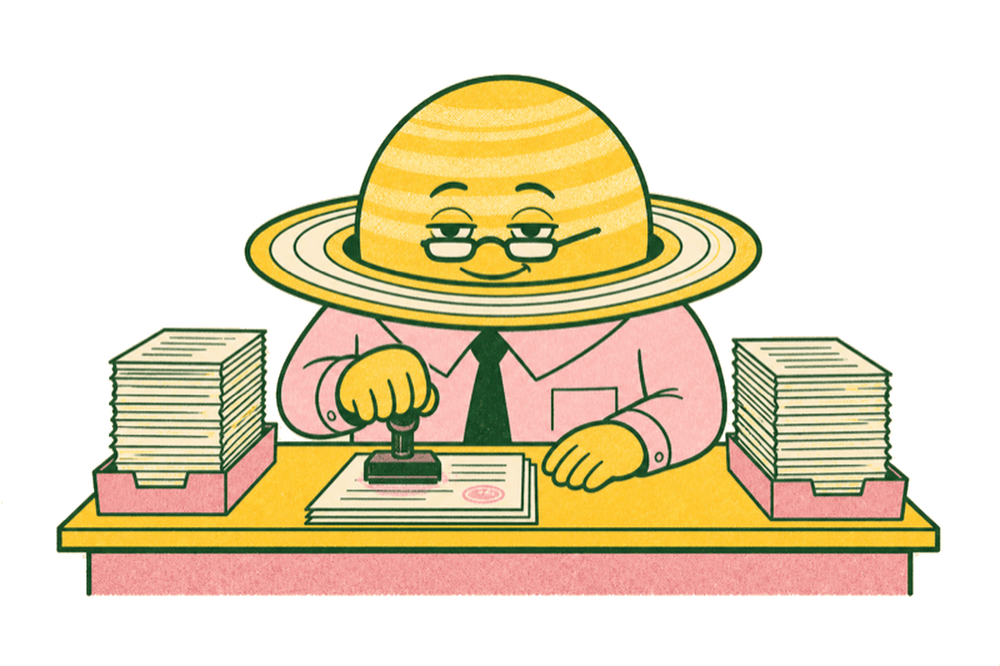

01 / CAREER DESK01
Your work gets good when it gets personal.
You are not built for work that asks you to leave your taste at the door. The strongest lane is the one where judgment, craft, and people all meet.
The work gets stronger when your point of view is visible in the room. Let the part of the job that feels most like yours become the part people remember.
WHY TOTA LANDED HEREJudgment, craft, and people all meet where you work.